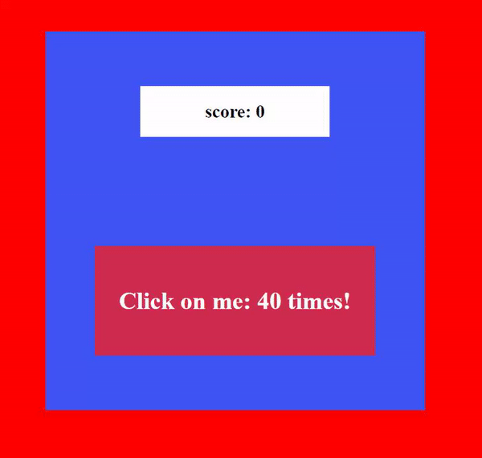

1
Кликер
среднеавтопроверка
Сделай игру-кликер: счёт растёт с каждым кликом, оставшееся число кликов уменьшается, каждые 5 кликов меняется цвет фона, а в конце появляется поздравление.

Показать ответ (сначала попробуй сам!)
<!DOCTYPE html>
<html lang="en">
<head>
<meta charset="UTF-8">
<meta name="viewport" content="width=device-width, initial-scale=1.0">
<title>Clicker</title>
<style>
body {
margin: 0;
padding: 0;
height: 100vh;
background-color: red;
display: flex;
justify-content: center;
align-items: center;
transition: all ease .25s;
}
#game_box {
height: 500px;
width: 500px;
background-color: #4056F4;
display: flex;
justify-content: space-around;
flex-direction: column;
align-items: center;
}
#score {
width: 50%;
background-color: white;
text-align: center;
}
#clicker {
background-color: #CE2D4F;
cursor: pointer;
transition: all ease 0.25s;
}
#clicker h1 {
white-space: nowrap;
color: white;
padding: 1em;
}
.gameOver {
font-size: 4em;
padding: 1em;
color: black;
background-color: white;
border-radius: 25px;
text-align: center;
}
</style>
</head>
<body>
<div id="game_box">
<div id="score">
<h2>score: <span id="count">0</span></h2>
</div>
<div id="clicker"><h1>
Click on me: <span>0</span> times!
</h1></div>
</div>
<script>
let background = document.querySelector('body');
let clicker = document.querySelector('#clicker');
let clickerText = document.querySelector('#clicker span');
let gameBox = document.querySelector('#game_box');
let score = document.querySelector('#score #count');
let colors = ['#1eff00', '#83ff0f', '#ffd30f', '#ff9f0f', '#ff670f', '#ff3f0f', '#ff130f'];
let gameScore = 0;
let gameLen = colors.length * 5 + 5;
clickerText.textContent = gameLen;
clicker.addEventListener('click', gameEvent);
function gameEvent(event) {
gameScore++
gameLen--
clickerText.textContent = gameLen;
score.textContent = gameScore
if (gameScore % 5 == 0) {
changeColor()
}
}
function changeColor() {
let color = colors.pop();
if (color == undefined) {
gameOver()
}
background.style.backgroundColor = color;
}
function gameOver() {
gameBox.remove();
let done = document.createElement('div');
done.className = 'gameOver';
done.textContent = 'Congratulations you win the game! Your final score: ' + gameScore;
background.append(done);
}
</script>
</body>
</html>